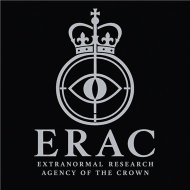
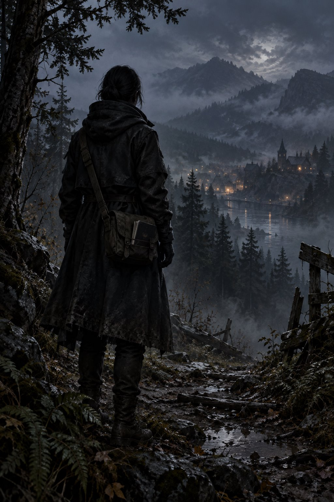

01 / TEAM LEAD
RECORD 01 팀장
라이카
스칼릿 그레이스 · 코드네임 LAIKA
조사 1팀을 이끄는 신비 연구자. 현장 지휘와 현상 분석을 맡으며, 기록에서 빠진 사람과 사건을 다시 묻습니다. 차분한 태도로 상대를 기다리지만, 필요한 질문을 지나치지는 않습니다.
- 소속
- ERAC · 조사 1팀
- 담당
- 현장 지휘 · 신비 현상 분석
PERSONNEL DIRECTORY / INVESTIGATION TEAM 01
팀장 라이카와 조사 1팀에 합류한 두 사람의 기록입니다. 인물을 선택하면 각자의 이야기와 능력, 아직 남은 질문을 읽을 수 있습니다.
명단 살펴보기
기관황실 이상현상 연구청
본부런던
열람 순서팀장 → 신규 조사원
TEAM 01 / PERSONNEL
명단의 번호는 이 페이지에서 기록을 읽는 순서입니다.
RECORD 01 팀장
스칼릿 그레이스 · 코드네임 LAIKA
조사 1팀을 이끄는 신비 연구자. 현장 지휘와 현상 분석을 맡으며, 기록에서 빠진 사람과 사건을 다시 묻습니다. 차분한 태도로 상대를 기다리지만, 필요한 질문을 지나치지는 않습니다.

02 / NEW ARRIVALRECORD 02 조사원
사라진 사람의 흔적을 좇는 사냥꾼
작은 마을과 외곽에서 사냥꾼으로 일했습니다. 함께 지내던 사람의 실종을 계기로 어긋나는 기억과 기록을 모으기 시작했고, 조사 1팀과 현장에서 만났습니다. 압력의 변화와 소리를 감지하고 분리하는 힘을 지녔습니다.
이름과 실제 외형은 아직 정해지지 않았습니다.
인물 기록 열람RECORD 03 조사원
지도에서 사라진 구역에서 돌아온 지도 제작자
지도 제작자로 일하며 도면과 실제 길을 대조했습니다. 공상 오염 지역에서 살아 돌아왔지만 그곳은 지도에서 사라졌습니다. 장소의 신비를 감지하고 분석하며, 현장에서는 돌아올 길을 먼저 확보하려 합니다.
이름과 실제 외형은 아직 정해지지 않았습니다.
인물 기록 열람